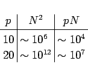
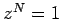

Inhalt Index DeskTop Bronstein

 Numerische Mathematik Approximation, Ausgleichsrechnung, Harmonische Analyse Harmonische Analyse Schnelle Fourier-Transformation (FFT)
Numerische Mathematik Approximation, Ausgleichsrechnung, Harmonische Analyse Harmonische Analyse Schnelle Fourier-Transformation (FFT)


Die Summen, die in den Formeln (19.210) auftreten, kommen auch im Zusammenhang mit der diskreten FOURIER-Transformation, z.B. in der Elektrotechnik, in der Impuls- und vor allem in der Bildverarbeitung, vor. Dabei kann N sehr groß sein, so daß die betreffenden Summen äußerst rationell berechnet werden müssen, denn die Berechnung der N Näherungswerte (19.210) für die FOURIER-Koeffizienten erfordert etwa N2 Additionen und Multiplikationen. Für den Spezialfall N=2p läßt sich jedoch mit Hilfe der sogenannten Schnellen FOURIER-Transformation FFT (Fast FOURIER-Transformation) die Anzahl der Multiplikationen von N2 = 22p auf pN = p2p senken. Die Größenordnung dieser Reduzierung erkennt man an dem folgenden Zahlenbeispiel:
|  | (19.215) |
Dadurch sinkt der Rechenaufwand und damit auch die Rechenzeit so stark ab, daß für einige wichtige Anwendungsgebiete bereits der Einsatz kleinerer Computer ausreicht.
Die FFT nutzt die Eigenschaften der N-ten Einheitswurzel, d.h. der Lösungen der Gleichung , aus, um die Summanden in (19.210) sukzessiv zusammenzufassen.